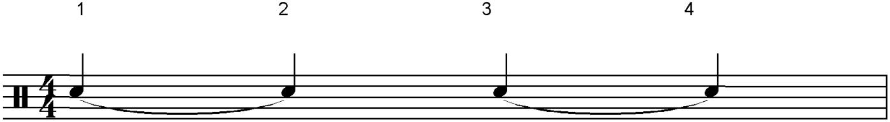
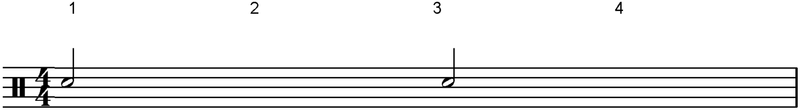

Ties
In music theory, a tie is a small, curved line which connects two notes of the same pitch. The time values of tied notes are added together – the note is only played once.
Ties are usually written on the opposite side of a musical note to its stem. If the stems are up, the tie is placed underneath the notes. If the stems are down, the tie is drawn above the notes.
Ties can cross bar lines.
Example:
Here we have four crotchets in a bar of 4/4 time. The first note has been tied to the second note. Crotchets 3 and 4 are also tied. The first crotchet is played and is then held for the duration of the tied note (2nd beat) as well.
Remember: Only the first note is played in tied notes, but it lasts as long as both notes put together.
The following bar will sound exactly the same as the previous bar even though it looks rather different.
